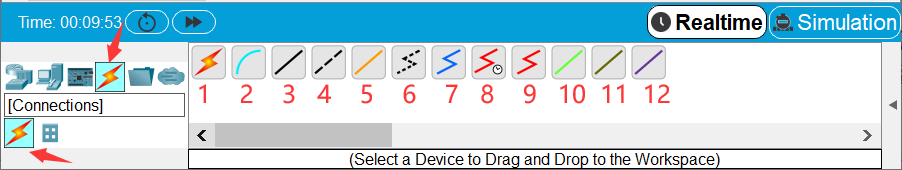

网络模拟器简介
Cisco Packet Tracer 7.2模拟器
Cisco Packet Tracer是由Cisco（思科）公司发布的一个仿真学习工具，它是运用软件模拟真实的网络设备和环境，利用软件中虚拟的网络设备及线缆完成网络的组网和配置，实现网络的互联。因此我们可以在没有网络设备的情况下，也能在软件的图形界面建立网络拓扑，并可追踪数据包在网络中详细的处理过程，学习搭建网络的要点和难点（更多关于Cisco Packet Tracer的介绍详见参考文献中的《网络设备管理与维护项目教程·Cisco Packet Tracer模拟器版》）。
本实验课程已经提供有Cisco Packet Tracer 7.2模拟器软件包，可直接打开“Cisco Packet Tracer 绿色版\bin\PacketTracer7.exe”运行，无需安装，也无需注册。
如果想要最新版本的模拟器，可以到思科官网下载：https://www.netacad.com/courses/packet-tracer。注意：需要注册账号（免费）才可使用。
打开PacketTracer7.exe后，进入其操作界面：

在底部设备工具栏区域，提供常用的PC、服务器等终端设备和路由器、交换机、防火墙、无线设备等常用网络设备及线缆。
各种型号路由器：

各种型号交换机：

常用设备及其他终端设备：

各种连接线：
连接线类型有：
自动选择连接类型的连接线
Console配置线
直通线
交叉线
光纤
电话线
同轴电缆
DCE线
DTE线
八爪线
自定义线缆
USB线
在实验中，我们只需用到直通线和交叉线。目前绝大部分网络设备支持MDI/MDIX功能，能够实现线缆的自适应 ，即连接时使用直通线或交叉线都可以。但在Cisco Packet Tracer中仍要研究遵守连线类型。
直通线 ：用于连接不同类型的网络设备，如计算机与交换机、交换机与路由器。在制作时两端水晶头的制作标准相同。注意，路由器本质上是一台计算机，因此计算机与路由器之间的连接可看作是相同设备的连接，因此应使用交叉线。
交叉线 ：用于连接相同类型的网络设备，如计算机和路由器、路由器和路由器、交换机和交换机、计算机和计算机，需要注意的是交叉线两端水晶头的制作标准不同。
网络设备
交换机
交换机（Switch）意为“开关”是一种用于电（光）信号转发的网络设备。它可以为接入交换机的任意两个网络节点提供独享的电信号通路。最常见的交换机是以太网交换机。其他常见的还有电话语音交换机、光纤交换机等。（来源百度百科）

本实验室配备有二层交换机和三层交换机。
二层交换机工作于OSI模型的第2层（数据链路层），故而称为二层交换机。二层交换机能够基于数据链路层的MAC首部信息，进行数据帧或VLAN（Virtual LAN）的传输工作。
三层交换机是一种在二层交换机的基础上增加了路由选择功能的网络硬件，它同时具有几乎二层交换的速度，也能够基于三层网络层的IP首部信息，实现路由选择以及分组过滤等功能。
二层交换机可以通过VLAN分割广播域，但终端之间的数据帧交换必须位于同一VLAN范围内。如果不同VLAN的终端要进行通信时，则需要采用路由功能，这就需要额外添加路由器。但使用三层交换机则无需其他硬件设备，就能够完成VLAN配置和VLAN之间的通信过程。
提示
三层交换机最重要的目的是加快大型局域网内部的数据交换，其路由功能也多是围绕这一目的而展开的，所以它的路由功能没有同一档次的专业路由器强，不能完全替代路由器。在企业网和教学网中，一般将三层交换机用在网络的核心层，以连接不同的子网或VLAN。
二层交换机：

三层交换机：

思科模拟器中的交换机：

路由器
路由器是工作在OSI参考模型第三层（网络层）的网络连接设备，它的基本功能是根据数据包的IP地址选择发送路径，转发数据包到相应网络。
路由器的数据转发时基于路由表实现的，每个路由器都会维护一张路由器，根据路由表决定数据包的转发路径。

当路由器接收到一个数据包后，首先对数据包进行校验，如果是发给路由器用于协议处理的数据包，路由器将交给相应模块去处理，而大多数是需要转发的数据包，路由器将查询路由表，然后根据查询结果转发数据包到相应的端口和网络。路由表由多个路由表表项构成，可以由管理者手动设置（即静态路由），也可以根据路由协议自动生成（即动态路由）。
提示
在构建大型的LAN时，需要使用交换机或主机等设备来管理大量的MAC地址信息。当频繁进行广播通信时，设备的负担就会非常大。为减轻设备的负担，需要将LAN划分成一个个子网，而子网间的通信就需要依靠路由器进行了。另外，为了连接互联网，与互联网服务供应商建立连接时，也同样需要用到路由器设备。
路由器：

思科模拟器中的路由器：

网络设备的配置
以路由器为例，我们下面介绍如何对网络设备进行配置。 在底部工具栏上，将1841型号的路由器拖拽到工作区。单击该图标，弹出该设备的功能对话框，该对话框包括Physical（物理）、Config（配置）、CLI（命令）和Attributes（属性）选项卡。其中，我们最常用的是CLI选项卡，可以执行设备所有配置的命令。

Cisco网络设备的常用配置命令
以交换机设备为例：
1Switch> //用户模式的提示符是">""
2
3Switch>enable //进入交换机特权模式
4Switch# //特权模式的提示符是“#”
5Switch#exit //特权模式输入exit退出到上一级模式
6Switch>
7
8Switch>enable
9Switch#configure terminal //进入交换机全局模式（也称为config模式）
10Switch(config)# //全局模式的提示符是“(config)#”
11
12Switch(config)#interface f0/0 //进入接口模块
13Switch(config-if)# //接口模式的提示符是“(config-if)#”
14Switch(config-if)#exit //退回上一级（一级一级退回用exit）
15Switch(config)#exit
16Switch#
17
18Switch(config)#interface f0/0.1 //进入子接口模式
19Switch(config-subif)# //特权模式的提示符是“(config-subif)#”
20
21Switch(config)#hostname SW1 //更改交换机的主机名
22
23Switch#show interfaces f0/1 //查看接口状态
24Switch#show running-config //查看配置文件
25Switch#show ip int brief //查看端口信息
26
27Switch#write //保存配置文件
28Switch#copy running-config startup-config //保存配置文件名为startup-config
29Switch#erase startup-config //删除配置文件
30Switch#reload //重启交换机